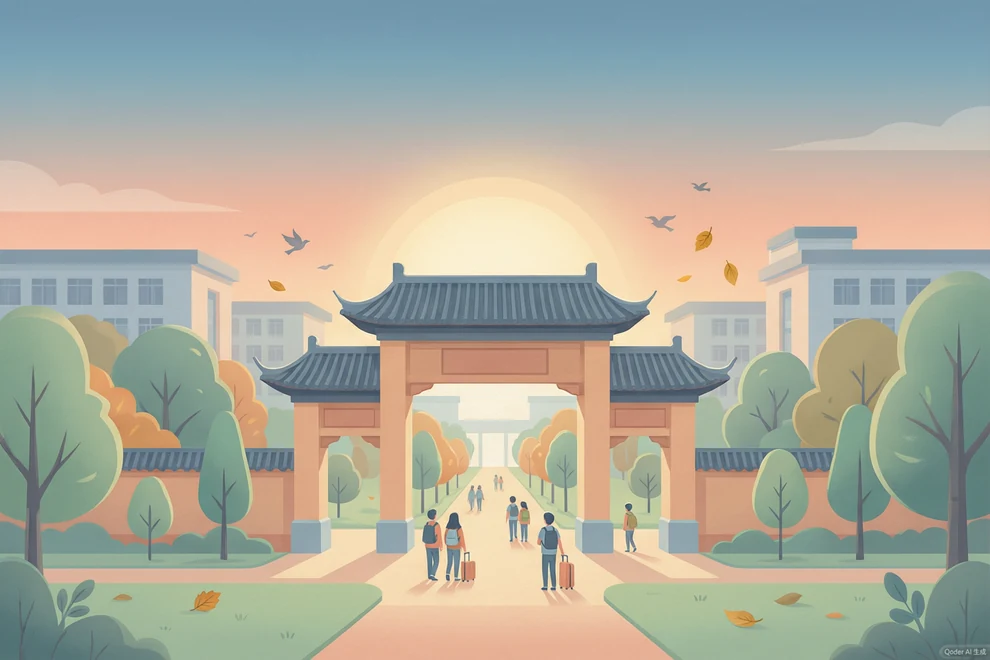
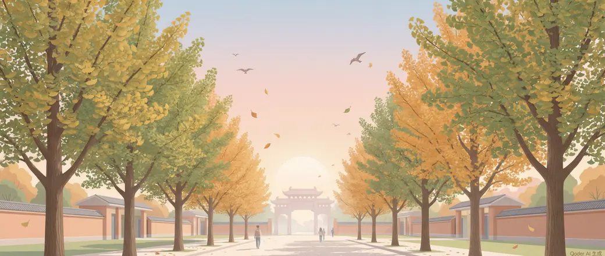

我的大学日记
入学两周 · 十四篇日记
每一天都会有一件真实得有点耳熟的事发生。
你只需要决定，当时的自己会怎么做。
进度保存在这台设备的这个浏览器里
今天的日记
台灯已经打开了，日记还在路上……
等待不会消耗这一天
前面几天
- 第 1 天 · 报到那天，我没敢问宿管阿姨要钥匙排了很久队，最后是同寝的男生帮我刷的卡。
- 第 2 天 · 社团摊位前站了三圈最后只领了一张宣传单，没敢填表。
- 第 3 天 · 把生活费转给了家里说是不缺钱，其实是想买那本很贵的参考书。
- 第 4 天 · 通宵改了三门课的作业框架走廊的灯灭了很多次。
9 月 5 日 有风
凌晨一点的台灯
室友们十一点半就睡了。上铺的呼吸声传下来，你才意识到已经这个点了。
桌上是明天早上要交的《大学生活导论》课程论文，你写到第二部分就卡住了——其实材料都查到了，只是不太确定老师说的「结合自身体验」到底要写多私人的东西。手机亮了一下，社团群里还在接龙报名，截止时间是今晚十二点，组长@了你好几次。
你在图书馆坐了一整天，太阳穴到现在还在跳。窗缝里钻进来的风把走廊的声控灯吹得忽明忽暗，灭了一次，又亮起来。
这时候你会——
你选择了 · 先把论文写完，社团的表明天再补
把消息设成了免打扰
你给社团群开了免打扰，屏幕暗下去的那一刻房间安静得有点心虚。
第二段写了三遍才顺，走廊的灯灭了三次又亮起来。交出去的版本你自己不太满意，但它是写完了的。回程接水的路上，你在楼道里碰见同样没睡的隔壁床，你们一起站了一会儿，谁也没说话。
第 6 天会在你点继续之后才开始
十四天的日记摊在桌上，正在为你写结尾……
属性已经锁定，这一步只重试结局，不会重做第 14 天

结局 · 9 月 14 日
你把自己的节奏，找回来了一点点
这两周你几乎没有一件事是「轻松办完」的，但你都办到了某种程度：论文交上去了，哪怕不是最好的版本；室友叫你吃饭你去了两次，第三次你说想自己待着——那也是第一次你没勉强自己。
钱你留得住，人你累得狠。最后一个晚上你走在林荫道上，发现自己不再数还剩几天了。
评价
你把自己排在了任务后面。学业的 A 不是天赋，是你熬出来的；精力和社交同时落到 D，是同一件事的代价。这两周里没有哪一个选择是错的，只是有些选择会把后面的路变窄一点。
给接下来几周的你
先睡够三天，再决定要不要退社团。如果想去上课，试着在课间跟旁边的人说一句和课无关的话——不用长，一句就够。低档位不等于你不行，它只是这两周留下的脚印。
结束后会清掉旧存档，开始新的一局
今天的日记还没写完
网络好像打了个盹，前面写好的内容都还在。
重试不会消耗这一天，也不会重复结算
这本日记我读不懂
存档的版本和当前规则对不上。我没有改动它，也没有清空它——你之前的记录还在原处。
这里刻意不给「重新开始」，避免误删存档